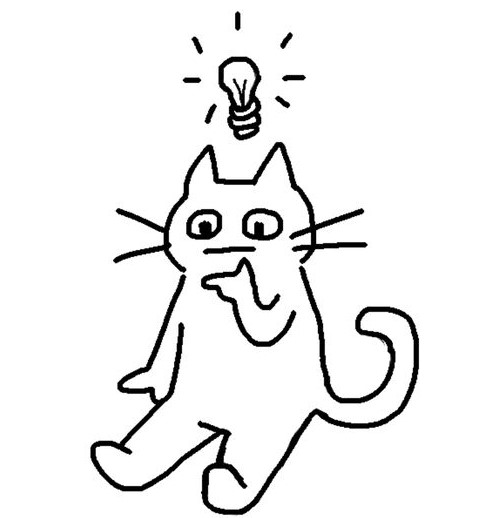

REGRAS DO JOGO
TUTORIAL
CURIOSIDADES
SOBRE NÓS
OPÇÕES
Opções

Música: Mute, mudar, volume.
Tema do tabuleiro: doodle cats; gatos selvagens; gatos caes e ratos.
Configuração do tabuleiro: 5,7,9.
Dificuldade: Fácil, intermédio e difícil.
Vidas: 1-10, infinitas.
Tempo de jogada: 5-20s, infinito.